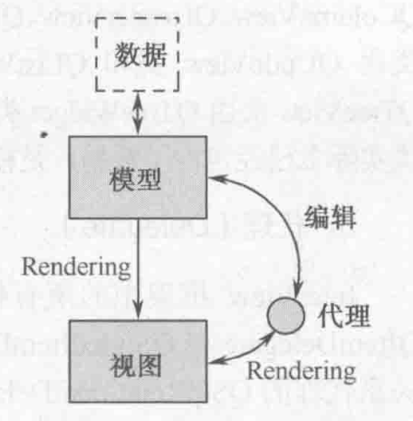

# GUI 程序设计基础
# GUI 程序结构和运行机制
# 可视化 UI 设计
# 代码化 UI 设计
# 使用 CMake 构建项目
# Qt Creator 使用技巧
# Qt 框架功能概述
# Qt6 框架中的模块
# Qt 基础模块
# Qt 附加模块
# Qt 全局定义
# Qt 元对象系统
# 元对象系统概述
Qt 元对象系统提供了对象间的通信机制（信号和槽）、运行时类型信息和动态属性系统的支持，是标准 C++ 的一个扩展，它使 Qt 能够更好的实现 GUI 用户图形界面编程。Qt 的元对象系统不支持 C++ 模板。
Qt 元对象系统基于以下三个事实：
- 基类
QObject：任何需要使用元对象系统功能的类必须继承自QObject。QObject是 Qt 中最基本的类，是所有 Qt 对象的基类。 Q_OBJECT宏：Q_OBJECT宏必须出现在类的私有声明区，用于启动元对象的特性。- 元对象编译器（moc, Meta-Object Compiler）：为
QObject子类实现元对象特性提供必要的代码实现。（将 Qt 对 C 的语法拓展编译还原为 ** 标准 C 代码 **）
# 运行时类型信息
# 信号和槽
-
信号（signal）和槽（slot）是 Qt 自行定义的一种通信机制，实现对象之间的数据交互。
-
当用户或系统触发了一个动作，导致某个控件的状态发生了改变，该控件就会发射一个信号，即调用其类中一个特定的成员函数（信号），同时还能携带有必要的参数。
-
槽函数与普通成员函数没有太多区别，差别在于其功能。槽函数更多体现为对某种特定信号的处理，可以将槽和其他对象信号建立连接，这样当发射信号时，槽函数能将被触发和执行，进而来完成机体功能。
-
信号的定义
class XX: public QObject{
Q_OBJECT // 宏，moc 链接工具，元对象编译器，处理 QT 语法扩展，还原成标准 c++ 代码signals:void signal_func(..); // 信号函数，只需声明，不能写定义。QT 语法扩展，普通 C++ 无法编译
} -
槽的定义
class XX: public QObject{
Q_OBJECT
public slots:
void slot_func(..){..} // 槽函数可以连接到某个信号上，当信号被发射时，槽函数将被触发和执行。另外槽函数可以当作普通成员函数使用。
} -
信号和槽的链接
QObject::connect(const QObject* sender, // 信号发送对象指针
const char* signal, // 要发送的的信号函数，可以使用 “SIGNAL (..)” 宏进行类型转换
const QObject* receiver, // 信号的接收对象指针
const char* method); // 要执行的槽函数，使用 “SLOT (..)” 宏进行类型转换
// 信号函数连同参数类型转换为 const char* -
实例：
- 按钮点击时发送信号：clicked ()
- 实现标签关闭功能：close ()
int main(int argc, char *argv[])
{QApplication a(argc, argv);
MainWindow w;w.resize(640, 640);
// 创建标签控件QLabel label("我是标签", &w);
label.move(20, 40);
// 创建按钮空间，栈创建，系统自动销毁QPushButton btn("我是按钮", &w);
btn.move(20, 100);
QPushButton btn2("退出", &w);
btn2.move(100, 100);
w.show();
// 点击按钮关闭标签QObject::connect(&btn, SIGNAL(clicked(bool)), &label, SLOT(close()));
// 增加退出按钮，实现退出应用程序QObject::connect(&btn2, SIGNAL(clicked(bool)),
&a, SLOT(quit()));
//&a, SLOT(closeAllWindows())//&w, SLOT(close())return a.exec();
} -
信号和槽连接的语法要求与应用
-
信号和槽参数要一致
QObject::connect(A, SIGNAL(sigfun(int)), B, SLOT(slotfun(int)));
QObject::connect(A, SIGNAL(sigfun(int)), B, SLOT(slotfun(int,int))); //error
-
可以带有缺省参数
QObject::connect(A, SIGNAL(sigfun(int)), B, SLOT(slotfun(int,int=0)));
-
信号函数参数可以多于槽函数，多于参数将被忽略
QObject::connect(A, SIGNAL(sigfun(int,int)), B, SLOT(slotfun(int)));
-
信号和槽函数（一对多）
QObject::connect(A, SIGNAL(sigfun(int)), B1, SLOT(slotfun1(int)));
QObject::connect(A, SIGNAL(sigfun(int)), B2, SLOT(slotfun2(int)));
-
信号和槽函数（多对一）
QObject::connect(A1, SIGNAL(sigfun1(int)), B, SLOT(slotfun(int)));
QObject::connect(A2, SIGNAL(sigfun2(int)), B, SLOT(slotfun(int)));
-
两个信号直接连接，信号级联
QObject::connect(A1, SIGNAL(sigfun1(int)), A2, SLOT(slotfun2(int)));
-
-
实例：创建滑块（QSlider）和选值框（QSpinBox），通过信号和槽的机制，保持同步运行
- QSlider
void setRange(int min, int max);//设置滑动范围void setValue(int)[slot];//设置当前位置void valueChange(int value)[signal];//滑动时发送信号
- QSpinBox
void setRange(int min, int max);//设置数值改变范围void setValue(int)[slot];//设置当前数值void valueChange(int value)[signal];//选值框数值改变时发送信号
QDialog parent;parent.resize(320, 240);
// 创建水平滑块QSlider slider(Qt::Horizontal, &parent);
slider.move(20, 100);
slider.setRange(0,200);
// 创建选值框QSpinBox spin(&parent);
spin.move(220, 100);
spin.setRange(0, 200);
// 滑块滑动让选值框数值改变QObject::connect(&slider, SIGNAL(valueChanged(int)),
&spin, SLOT(setValue(int)));
// 选值框数值改变让滑块随之滑动QObject::connect(&spin, SIGNAL(valueChanged(int)),
&slider, SLOT(setValue(int)));
parent.show();
- QSlider
-
案例：获取系统时间
-
案例：实现计算器
-
通过 Qt designer 重构计算器案例
-
使用转换器 (uic)，将 calculatordialog.ui (xml) 转换为 ui_calcculatordialog.h (c++)
uic calculatordialog.ui -o ui_calcculatordialog.h(不手动转换，makefile 中也会进行转化)
-
使用 ui_calculatordialog.h 里面已经自动生成的界面相关代码，完成代码编写
- 通过继承方式，将界面代码继承过来直接使用
- 通过组合方式，添加一个界面类的成员变量 (ui)，再通过该成员访问界面相关的代码，实际开发中，推荐使用这种方法。
-
构建、测试
-
-
案例：登录对话框
# 对象树
什么是 Qt 对象：定义一个类，继承于 QObject ，因此而产生的对象叫 Qt 对象
- 对象通过对象树的形式组织。
- 对象树主要用来内存回收，对象树之间不一定是继承关系
- Qt 对象间可以存在父子关系
- 每一个对象都保存有它所有子对象的指针
- 每一个对象都有一个指向其父对象的指针
- 可以使用
findChild()或findChildren()查找对象的子对象。
- 当指定 Qt 对象的父对象时，该对象将自动将自己添加到父对象的
children()列表中- 其父对象会在子对象链表中加入该对象的指针
- 该对象会保存指向其父对象的指针
- 当 Qt 对象被销毁时
- 将自己从父对象的 Children List 移除
- 将自己的 Children List 中的所有对象销毁
# QObject 基类
# Qt 中使用到的设计模式
-
单例模式
qApp 宏返回指向 QApplication 的单例
特点：单例模式确保一个类只有一个实例，并提供全局访问点。这样可以避免在系统中出现多个相同的对象，从而提高系统的性能和可维护性。
应用场景：单例模式常用于需要全局访问的对象，比如说日志记录器、数据库连接池等。
说明：常见用法是把类的构造函数设为私有，然后提供一个类的静态函数来获取单例对象
如下代码，通过宏 aApp 返回 instance。可以看到，类 QCoreApplication 的构造函数是 private。
时间和空间：懒汉式是典型的时间换出空间。饿汉式是典型的空间换时间。
线程安全：不加同步的懒汉式的线程不安全的。饿汉式是线程安全的。#define qApp QCoreApplication::instance()class Q_CORE_EXPORT QCoreApplication
#ifndef QT_NO_QOBJECT: public QObject
#endif{#ifndef QT_NO_QOBJECTQ_OBJECT
Q_PROPERTY(QString applicationName READ applicationName WRITE setApplicationName NOTIFY applicationNameChanged)
Q_PROPERTY(QString applicationVersion READ applicationVersion WRITE setApplicationVersion NOTIFY applicationVersionChanged)
Q_PROPERTY(QString organizationName READ organizationName WRITE setOrganizationName NOTIFY organizationNameChanged)
Q_PROPERTY(QString organizationDomain READ organizationDomain WRITE setOrganizationDomain NOTIFY organizationDomainC
-
工厂模式
- 创建一个新的类，可以将这个类称之为工厂类。对于简单工厂模式来说，需要的工厂类只有一个。
- 在这个工厂类中添加一个公共的成员函数，通过这个函数来创建我们需要的对象，关于这个函数一般将其称之为工厂函数。
- 关于使用，首先创建一个工厂类对象，然后通过这个对象调用工厂函数，这样就可以生产出一个指定类型的实例对象了。
-
原型模式（Prototype Pattern）
特点：原型模式通过复制现有的对象来创建新的对象。这样可以避免重复创建对象，从而提高系统的性能。
应用场景：原型模式常用于创建复杂对象，尤其是当对象的创建过程很耗时、耗资源时。比如说，一个复杂的对象需要从数据库中读取数据并进行计算，这时可以使用原型模式来避免重复读取数据库，提高系统的性能。
说明：一般用法就是在类里定义一个 clone 方法，用来创建新的对象
原型模式重点在于重载 operator = ()，实现拷贝构造实现快速生成一个当前类的副本目标
经常用在 class 拷贝，貌似好像没有怎么实现过，因为都是传 Class 地址。这个模式实现的可能就只有 Qt 中的 QString class 还有带有拷贝构造的容器类型 -
反射模式
反射就是指对象成员的自我说明。 Qt 元对象模式就是反射模式。QObject 拥有 QMetaObject、QMetaProperty 类就能实现反射模式。
-
命令模式
命令模式：把操作封装成具有公共执行接口的对象。这样就可以把操作放到一个队列中，可以实现取消已经执行的操作。 Qt 中 QUndoCommand、QRunnable、QAction 可以看成是命令模式。
命令模式将一个请求封装成一个对象，从而可以对请求进行参数化、队列化、记录日志等操作。这样可以使得系统更加灵活、可扩展。
应用场景：命令模式常用于需要将请求进行参数化、队列化、记录日志等操作的情况下。比如说，一个系统需要对多个操作进行记录，这时可以使用命令模式来记录每个操作。
说明：命令模式实现了请求发送者和接收者之间的解耦，请求发送者把操作所需的信息封装成一个对象发给接收者，接收者不需要知道它具体怎么操作，只需要调用某个固定的方法就可以完成请求。
-
观察者模式
观察者模式（又被称为发布 - 订阅（Publish/Subscribe）模式，属于行为型模式的一种，它定义了一种一对多的依赖关系，让多个观察者对象同时监听某一个主题对象。这个主题对象在状态变化时，会通知所有的观察者对象，使他们能够自动更新自己。 Qt 中事件循环、信号和槽、视图模型都可以视为观察者模式。其实事件循环是真正的观察者模式，信号和槽由事件实现、视图模型由信号和槽实现。
-
组合模式
Qt 中由 QObject 实现的父子类就是组合模式。
特点：组合模式将对象组合成树形结构，并以统一的方式处理这些对象。这样可以使得系统更加灵活、可扩展。
应用场景：组合模式常用于处理复杂的层次结构，比如说文件系统、GUI 界面等。在这些系统中，通常需要对不同的对象进行统一处理，比如遍历、增加、删除等，这时可以使用组合模式来处理这些对象。
说明：Qt 中的 QWidget 就用到了组合模式，每一个控件都由 QWidget 或其派生类派生，它们之间存在着树状的层级关系，并且都有一些共有的方法，比如 QPaintEvent，setParent，move，resize 等。
# 容器类
# 其他常用基础类
# QVariant 类
# QFlags 类
# QRandomGenerator 类
# 常用界面组件
# 界面组件概述
# 布局管理
# QString 字符串操作
# QSpinBox 和 QDoubleSpinBox
# 常用按钮组件
# QSlider 和 QProgressBar
# 日期和时间
# QTimer 和 QElapsedTimer
# QComboBox
# QMainWindow 和 QAction
# QToolButton 和 QListWidget
# QTreeWidget
# QTableWidget
-
创建控件时，可以指定停靠在某个父窗口上面，这时控件将作为子窗口被束缚在其父窗口的内部，并伴随父窗口一起移动、隐藏、显示和关闭；否则该控件将作为独立窗口显示在屏幕上，且游离于其他窗口之外。
-
QWidget 及其子类的对象可以作为其他控件的父窗口
-
常用的父窗口类有如下三个：
- QWidget
- QMainWindow（主窗口）//QWidget 的直接子类
- QDialog（对话框）//QWidget 的直接子类
-
父窗口的析构函数会自动销毁其所有的子窗口对象，因此即使子窗口对象是通过 new 操作符动态创建的，可以不显式的执行 delete 操作，而且不用担心内存泄漏的问题，只要保证父窗口对象被正确销毁，其子窗口也将随之被销毁。
-
设置窗口的位置和大小
- void move(int x, int y);
- void resize(int w, int h);
-
#include <QMainWindow>#include <QWidget>#include <QApplication>#include <QLabel>#include <QDialog>#include <QPushButton>int main(int argc, char *argv[])
{QApplication a(argc, argv);
MainWindow w;w.resize(640, 640);
// 创建标签控件QLabel label("我是标签", &w);
label.move(20, 40);
// 创建按钮空间，栈创建，系统自动销毁QPushButton btn("我是按钮", &w);
btn.move(20, 100);
btn.resize(80, 80);
// 堆创建，new 对象如果指定了父窗口指针，可以不写 delete，随父窗口销毁QPushButton* btn2 = new QPushButton("我也是按钮", &w);
btn2->move(170, 100);
btn2->resize(80, 80);
w.show();
return a.exec();
}
# 模型 / 视图结构
MVC 设计模式是起源于 Smalltalk 的一种与用户界面相关的设计模式。通过使用此模式，可以有效地分离数据和用户界面。
MVC 设计模式包括三个元素：
- 表示数据的模型（Model）
- 表示用户界面的视图（View）
- 定义了用户在界面上操作的控制器（Controller）
Qt 中将视图和控制器部件结合在一起，使得框架更为简洁。为了灵活的处理用户输入，Qt 框架引入了代理（delegate）。通过使用代理，能够自定义数据条目（item）的显示和编辑方式。
Qt 的模型 / 视图结构分为三部分
-
模型（Model）
模型与数据源通信，并为其他部件提供接口；
-
视图（View）
视图从模型中获得用来引用数据条目的模型索引 (Model Index)。
-
代理（Delegate）
在视图中，代理负责绘制数据条目，当编辑条目时，代理和模型直接进行通信。
Model/View/Delegate 之间通过信号和槽进行通信，关系如下：
- 数据发生改变时，模型发出信号通知视图。
- 用户对界面进行操作，视图发出信号。
- 代理发出信号告知模型和视图编辑器目前的状态。

# 事件处理机制
# 什么是事件
-
在 Qt 中，是以事件驱动 UI 工具集，包括信号和槽都依赖于 Qt 的事件处理机制。
-
通常事件是由窗口系统或者 Qt 自身产生的，用以响应所发生的各类事情，比如用户按下并释放了键盘或者鼠标、窗口因缩放而需要重绘、定时器到期而应有的动作。
-
事件比信号更原始，一个下压式按钮，首先感受到的是鼠标事件，在进行必要的处理以产生按钮下沉继而弹起的视觉效果之后，才会发射 clicked () 信号
按钮 -> 事件 emit clicked ()-> 信号 clicked ()-> 槽 onClicked ()
# 如何处理事件
-
Qt 中，事件被封装成对象，所有的事件对象类型都继承自抽象类 QEvent
-
当事件发生时，首先被调用的是 QObject 类中的虚函数 event ()，其参数 (QEvent) 标识了具体的事件类型。
-
在 Qt 桌面应用（Qt Widgets Application）开发中，QWidget 类覆盖了其基类中的 event () 虚函数，并根据具体事件调用具体事件处理函数：
void QWidget::mousePressEvent(QMouseEvent* e);//鼠标按下事件void QWidget::mouseReleaseEvent(QMouseEvent* e);//鼠标释放事件void QWidget::mouseMoveEvent(QMouseEvent* e);//鼠标移动事件void QWidget::paintEvent(QPaintEvent* e);//绘图事件
-
所有的事件处理函数都是虚函数，可以被 QWidget 的子类覆盖，以提供针对不同窗口控件类型事件处理，控件的使用者所关心的往往是定义什么样的槽处理什么样的信号，而控件的实现者更关心覆盖哪些事件处理函数。
-
如果程序员希望在窗口中自定义的处理时间，可以继承 QWidget 或者其子类，比如 QDialog、QMainWindow，在自定义的窗口子类中重写事件处理函数，当相应事件被触发时会利用多态的语法机制，所执行到的事件处理函数，将是子类中重写的版本，从而实现程序员想要的事件处理效果。
# 绘图事件
- 通过绘图事件，可以实现自定义的图像绘制，当有下列情况之一发生时，将触发窗口的绘制事件，即 QWidget 类的 paintEvent () 虚函数会被调用：
- 窗口被创建以后第一次显示出来
- 窗口由隐藏状态转变为可见状态
- 窗口由最小化状态转变为正常或最大化状态
- 窗口因尺寸大小的变化需要呈现更多的内容
- QWidget 类的 update ()/repaint () 成员函数被调用
- 如果希望在自己的窗口中显示某个图像，在 QWidget 的窗口子类中可以重写绘图事件函数 paintEvent，在其中可以用 QPainter（Qt 二位图形引擎）实现指定的图像绘制、渲染等操作。
- 案例：基于资源的图片浏览器
# 定时器事件
- Qt 通过两套机制为应用程序提供定时功能
- 定时器事件，由 QObject 提供
- 定时器信号，由 QTimer 提供
- 通过定时器事件实现定时器
int QObjectL::startTimer(int interval);启动定时器，以后每隔 interval 毫秒触发一次定时器事件，返回定时器 IDvoid QObject::timerEvent(QTimerEvent* )[virtual];//定时器事件处理函数void QObject::killTimer(int id);//关闭参数id所标识的定时器
- 案例：基于定时器的摇奖机
# 鼠标和键盘事件
鼠标事件
- QWidget 类定义了以下虚函数提供对鼠标事件的处理，其参数 QMouseEvent 描述了鼠标事件的细节，如引发事件的鼠标按键、鼠标所在的位置等
virtual void mousePressEvent(QMouseEvent* e);//鼠标按下virtual void mouseReleaseEvent(QMouseEvent* e);//鼠标释放virtual void mouseDoubleClickEvent(QMouseEvent* e);//鼠标双击virtual void mouseMoveEvent(QMouseEvent* e);//鼠标移动
- 案例：鼠标测试，通过鼠标左键拖拽 label 方块移动
键盘事件
# 对话框和多窗口程序设计
# 文件系统操作和文件读写
# Qt 数据库
# Qt 数据库编程概述
-
数据库是指以一定方式存储在一起，能为多个用户共享，具有尽可能小的冗余特性，是与应用程序彼此独立的数据集合。
-
商业数据库
- 甲骨文 Oracle
- 微软 Sqlserver
- IBM 的 DB2
-
非商业数据库
- 甲骨文 Mysql
- 开源的 SQLite
-
SQLite 是一个轻量级的开源数据库，源代码完全公开不受版权限制，实现了自给自足的、无服务器、零配置的 SQL 数据库引擎，也是最广泛使用的关系型数据库
-
SQLite 引擎不是程序与之通信的独立进程，而是以静态库或共享库的方式连接到程序中，而不同于客户 - 服务器数据库连接方式，所以主要的使用方法是在编程语言内的直接 API 调用，当前主流编程语言都提供了 sqlite 操作的 API 接口
-
SQLite 在资源消耗、实时性和可操作性有着出色的表现，整个数据库（定义、表、索引和数据本身）都在宿主主机上，存储在一个单一的文件中，通常 SQLite 的工作是在开始一个事物的时候，锁定整个数据文件而实现的。
-
SQLite 主要特性
- 无服务器的
- 可以不用配置，安装和管理十分简单
- 数据库存储在一个单一的跨平台的磁盘文件
- 轻量级，完全配置时小于 400KiB，省略可选功能配置时小于 250KiB
- 自给自足不需要外部依赖
- 支持 SQL92 标准的大多数查询语言的功能
- 事务兼容 ACID，允许从多个进程或线程安全访问
-
sqlite3 常用命令
.help.database //查看数据库的名字和对应的文件名.open xxx.db.table //查看数据表的名字.schema //查看数据表创建时信息.mode //设置显示模式，如tab/list/column/csv.nullvalue //设置空白字段显示的字符串.header on //显示数据表的表头
# QSqlTableModel
# QSqlQueryModel
# QSqlQuery
# QSqlRelationalTableModel
# 基于 Qt 框架实现学生成绩管理系统
# Qt 绘图
# QPainter 绘图
# 坐标系统和坐标变换
# 图形 / 视图架构
# 图像处理
# 自定义插件和库
# Qt Charts
# Charts 模块概述
# 折线图绘制
# 图标交互操作
# 柱状图和饼图
# Qt Data Visualization
# Data Visualization 模块概述
# 三维柱状图
# 三维散点图
# 三维曲面图
# Qt 多线程
在进行桌面应用程序开发的时候， 假设应用程序在某些情况下需要处理比较复杂的逻辑， 如果只有一个线程去处理，就会导致窗口卡顿，无法处理用户的相关操作。这种情况下就需要使用多线程，其中一个线程处理窗口事件，其他线程进行逻辑运算，多个线程各司其职，不仅可以提高用户体验还可以提升程序的执行效率。
在 qt 中使用了多线程，有些事项是需要额外注意的：
- 默认的线程在 Qt 中称之为窗口 (ui) 线程，也叫主线程，负责窗口事件处理或者窗口控件数据的更新。
- 子线程负责后台的业务逻辑处理，子线程中不能对窗口对象做任何操作，这些事情需要交给窗口线程处理。
- 主线程和子线程之间如果要进行数据的传递，需要使用 Qt 中的信号槽机制。
# 线程类 QThread
Qt 中提供了一个线程类，通过这个类就可以创建子线程了，Qt 中一共提供了两种创建子线程的方式，后边会依次介绍其使用方式。先来看一下这个类中提供的一些常用 API 函数：
# 常用公共成员函数
// QThread 类常用 API | |
// 构造函数 | |
QThread::QThread(QObject *parent = Q_NULLPTR); | |
// 判断线程中的任务是不是处理完毕了 | |
bool QThread::isFinished() const; | |
// 判断子线程是不是在执行任务 | |
bool QThread::isRunning() const; | |
// Qt 中的线程可以设置优先级 | |
// 得到当前线程的优先级 | |
Priority QThread::priority() const; | |
void QThread::setPriority(Priority priority); | |
优先级: | |
QThread::IdlePriority --> 最低的优先级 | |
QThread::LowestPriority | |
QThread::LowPriority | |
QThread::NormalPriority | |
QThread::HighPriority | |
QThread::HighestPriority | |
QThread::TimeCriticalPriority --> 最高的优先级 | |
QThread::InheritPriority --> 子线程和其父线程的优先级相同, 默认是这个 | |
// 退出线程，停止底层的事件循环 | |
// 退出线程的工作函数 | |
void QThread::exit(int returnCode = 0); | |
// 调用线程退出函数之后，线程不会马上退出因为当前任务有可能还没有完成，调回用这个函数是 | |
// 等待任务完成，然后退出线程，一般情况下会在 exit () 后边调用这个函数 | |
bool QThread::wait(unsigned long time = ULONG_MAX); |
# 信号槽
// 和调用 exit () 效果是一样的 | |
// 代用这个函数之后，再调用 wait () 函数 | |
[slot] void QThread::quit(); | |
// 启动子线程 | |
[slot] void QThread::start(Priority priority = InheritPriority); | |
// 线程退出，可能是会马上终止线程，一般情况下不使用这个函数 | |
[slot] void QThread::terminate(); | |
// 线程中执行的任务完成了，发出该信号 | |
// 任务函数中的处理逻辑执行完毕了 | |
[signal] void QThread::finished(); | |
// 开始工作之前发出这个信号，一般不使用 | |
[signal] void QThread::started(); |
# 静态函数
// 返回一个指向管理当前执行线程的 QThread 的指针 | |
[static] QThread *QThread::currentThread(); | |
// 返回可以在系统上运行的理想线程数 == 和当前电脑的 CPU 核心数相同 | |
[static] int QThread::idealThreadCount(); | |
// 线程休眠函数 | |
[static] void QThread::msleep(unsigned long msecs); // 单位：毫秒 | |
[static] void QThread::sleep(unsigned long secs); // 单位：秒 | |
[static] void QThread::usleep(unsigned long usecs); // 单位：微秒 |
# 任务处理函数
// 子线程要处理什么任务，需要写到 run () 中 | |
[virtual protected] void QThread::run(); |
这个 run () 是一个虚函数，如果想让创建的子线程执行某个任务，需要写一个子类让其继承 QThread，并且在子类中重写父类的 run () 方法，函数体就是对应的任务处理流程。另外，这个函数是一个受保护的成员函数，不能够在类的外部调用，如果想要让线程执行这个函数中的业务流程，需要通过当前线程对象调用槽函数 start () 启动子线程，当子线程被启动，这个 run () 函数也就在线程内部被调用了。
# 线程使用方式 1
-
需要创建一个线程类的子类，让其继承 QT 中的线程类 QThread
class MyThread:public QThread
{......
} -
重写父类的 run () 方法，在该函数内部编写子线程要处理的具体的业务流程
class MyThread:public QThread
{......
protected:
void run()
{........
}} -
在主线程中创建子线程对象，new 一个就可以了
MyThread * subThread = new MyThread;
-
启动子线程，调用 start () 方法
subThread->start();
不能在类的外部调用 run () 方法启动子线程，在外部调用 start () 相当于让 run () 开始运行
当子线程别创建出来之后，父子线程之间的通信可以通过信号槽的方式，注意事项:
- 在 Qt 中在子线程中不要操作程序中的窗口类型对象，不允许，如果操作了程序就挂了
- 只有主线程才能操作程序中的窗口对象，默认的线程就是主线程，自己创建的就是子线程
这种在程序中添加子线程的方式是非常简单的，但是也有弊端，假设要在一个子线程中处理多个任务，所有的处理逻辑都需要写到 run () 函数中，这样该函数中的处理逻辑就会变得非常混乱，不太容易维护。
# 线程使用方式 2
Qt 提供的第二种线程的创建方式弥补了第一种方式的缺点，用起来更加灵活，但是这种方式写起来会相对复杂一些，其具体操作步骤如下：
-
创建一个新的类，让这个类从 QObject 派生
class MyWork:public QObject
{.......
} -
在这个类中添加一个公共的成员函数，函数体就是我们要子线程中执行的业务逻辑
class MyWork:public QObject
{public:
.......
// 函数名自己指定，叫什么都可以，参数可以根据实际需求添加void working();
} -
在主线程中创建一个 QThread 对象，这就是子线程的对象
QThread* sub = new QThread;
-
在主线程中创建工作的类对象（千万不要指定给创建的对象指定父对象）
p MyWork* work = new MyWork(this); // error
MyWork* work = new MyWork; // ok
-
将 MyWork 对象移动到创建的子线程对象中，需要调用 QObject 类提供的 moveToThread () 方法。
p // void QObject::moveToThread(QThread *targetThread);// 如果给 work 指定了父对象，这个函数调用就失败了// 提示： QObject::moveToThread: Cannot move objects with a parentwork->moveToThread(sub); // 移动到子线程中工作
-
启动子线程，调用 start (), 这时候线程启动了，但是移动到线程中的对象并没有工作
-
调用 MyWork 类对象的工作函数，让这个函数开始执行，这时候是在移动到的那个子线程中运行的
使用这种多线程方式，假设有多个不相关的业务流程需要被处理，那么就可以创建多个类似于 MyWork 的类，将业务流程放多类的公共成员函数中，然后将这个业务类的实例对象移动到对应的子线程中 moveToThread () 就可以了，这样可以让编写的程序更加灵活，可读性更强，更易于维护。
# 线程资源释放
# Qt 线程池
# 线程池的原理
我们使用线程的时候就去创建一个线程，这样实现起来非常简便，但是就会有一个问题：如果并发的线程数量很多，并且每个线程都是执行一个时间很短的任务就结束了，这样频繁创建线程就会大大降低系统的效率，因为频繁创建线程和销毁线程需要时间。
那么有没有一种办法使得线程可以复用，就是执行完一个任务，并不被销毁，而是可以继续执行其他的任务呢？
线程池是一种多线程处理形式，处理过程中将任务添加到队列，然后在创建线程后自动启动这些任务。线程池线程都是后台线程。每个线程都使用默认的堆栈大小，以默认的优先级运行，并处于多线程单元中。如果某个线程在托管代码中空闲（如正在等待某个事件）, 则线程池将插入另一个辅助线程来使所有处理器保持繁忙。如果所有线程池线程都始终保持繁忙，但队列中包含挂起的工作，则线程池将在一段时间后创建另一个辅助线程但线程的数目永远不会超过最大值。超过最大值的线程可以排队，但他们要等到其他线程完成后才启动。
在各个编程语言的语种中都有线程池的概念，并且很多语言中直接提供了线程池，作为程序猿直接使用就可以了，下面给大家介绍一下线程池的实现原理：
线程池的组成主要分为 3 个部分，这三部分配合工作就可以得到一个完整的线程池：
-
任务队列，存储需要处理的任务，由工作的线程来处理这些任务
- 通过线程池提供的 API 函数，将一个待处理的任务添加到任务队列，或者从任务队列中删除
- 已处理的任务会被从任务队列中删除
- 线程池的使用者，也就是调用线程池函数往任务队列中添加任务的线程就是生产者线程
-
工作的线程（任务队列任务的消费者） ，N 个
- 线程池中维护了一定数量的工作线程，他们的作用是是不停的读任务队列，从里边取出任务并处理
- 工作的线程相当于是任务队列的消费者角色，
- 如果任务队列为空，工作的线程将会被阻塞 (使用条件变量 / 信号量阻塞)
- 如果阻塞之后有了新的任务，由生产者将阻塞解除，工作线程开始工作
-
管理者线程（不处理任务队列中的任务），1 个
它的任务是周期性的对任务队列中的任务数量以及处于忙状态的工作线程个数进行检测
- 当任务过多的时候，可以适当的创建一些新的工作线程
- 当任务过少的时候，可以适当的销毁一些工作的线程
# QRunnable
在 Qt 中使用线程池需要先创建任务，添加到线程池中的每一个任务都需要是一个 QRunnable 类型，因此在程序中需要创建子类继承 QRunnable 这个类，然后重写 run () 方法，在这个函数中编写要在线程池中执行的任务，并将这个子类对象传递给线程池，这样任务就可以被线程池中的某个工作的线程处理掉了。
QRunnable 类 常用函数不多，主要是设置任务对象传给线程池后，是否需要自动析构。
// 在子类中必须要重写的函数, 里边是任务的处理流程
[pure virtual] void QRunnable::run();
// 参数设置为 true: 这个任务对象在线程池中的线程中处理完毕, 这个任务对象就会自动销毁
// 参数设置为 false: 这个任务对象在线程池中的线程中处理完毕, 对象需要程序猿手动销毁
void QRunnable::setAutoDelete(bool autoDelete);
// 获取当前任务对象的析构方式,返回true->自动析构, 返回false->手动析构
bool QRunnable::autoDelete() const;
创建一个要添加到线程池中的任务类，处理方式如下：
class MyWork : public QObject, public QRunnable
{
Q_OBJECT
public:
explicit MyWork(QObject *parent = nullptr)
{
// 任务执行完毕,该对象自动销毁
setAutoDelete(true);
}
~MyWork();
void run() override{}
}
在上面的示例中 MyWork 类是一个多重继承，如果需要在这个任务中使用 Qt 的信号槽机制进行数据的传递就必须继承 QObject 这个类，如果不使用信号槽传递数据就可以不继承了，只继承 QRunnable 即可。
class MyWork :public QRunnable
{
Q_OBJECT
public:
explicit MyWork()
{
// 任务执行完毕,该对象自动销毁
setAutoDelete(true);
}
~MyWork();
void run() override{}
}
# QThreadPool
Qt 中的 QThreadPool 类管理了一组 QThreads, 里边还维护了一个任务队列。QThreadPool 管理和回收各个 QThread 对象，以帮助减少使用线程的程序中的线程创建成本。每个 Qt 应用程序都有一个全局 QThreadPool 对象，可以通过调用 globalInstance () 来访问它。也可以单独创建一个 QThreadPool 对象使用。
线程池常用的 API 函数如下：
// 获取和设置线程中的最大线程个数
int maxThreadCount() const;
void setMaxThreadCount(int maxThreadCount);
// 给线程池添加任务, 任务是一个 QRunnable 类型的对象
// 如果线程池中没有空闲的线程了, 任务会放到任务队列中, 等待线程处理
void QThreadPool::start(QRunnable * runnable, int priority = 0);
// 如果线程池中没有空闲的线程了, 直接返回值, 任务添加失败, 任务不会添加到任务队列中
bool QThreadPool::tryStart(QRunnable * runnable);
// 线程池中被激活的线程的个数(正在工作的线程个数)
int QThreadPool::activeThreadCount() const;
// 尝试性的将某一个任务从线程池的任务队列中删除, 如果任务已经开始执行就无法删除了
bool QThreadPool::tryTake(QRunnable *runnable);
// 将线程池中的任务队列里边没有开始处理的所有任务删除, 如果已经开始处理了就无法通过该函数删除了
void QThreadPool::clear();
// 在每个Qt应用程序中都有一个全局的线程池对象, 通过这个函数直接访问这个对象
static QThreadPool * QThreadPool::globalInstance();
一般情况下，我们不需要在 Qt 程序中创建线程池对象，直接使用 Qt 为每个应用程序提供的线程池全局对象即可。得到线程池对象之后，调用 start () 方法就可以将一个任务添加到线程池中，这个任务就可以被线程池内部的线程池处理掉了，使用线程池比自己创建线程的这种多种多线程方式更加简单和易于维护。
# Qt 网络编程
| 计算机网络分层模型 | ||
|---|---|---|
| OSI七层网络模型 | TCP/IP四层概念模型 | 对应网络协议 |
| 应用层（Application） | 应用层 | HTTP、TFTP、FTP、NFS、WAIS、SMTP |
| 表示层（Presentation） | Telnet、Rlogin、SNMP、Gopher | |
| 会话层（Session） | SMTP、DNS | |
| 传输层（Transport） | 传输层 | TCP、UDP |
| 网络层（Network） | 网络层 | IP、ICMP、ARP、RARP、AKP、UUCP |
| 数据链路层(Data Link) | 网络接口层 | FDDI、Ethernet、Arpanet、PDN、SLIP、PPP |
| 物理层(Physical) | IEEE802.1A、IEEE802.2-IEEE802.11 | |
负责最后将信息编码成电流脉冲或其它信号用于网上传输
-
数据链路层
数据链路层通过物理网络链路供数据传输。
规定了 0 和 1 的分包形式，确定了网络数据包的形式； -
网络层
网络层负责在源和终点之间建立连接；
此处需要确定计算机的位置，通过 IPv4，IPv6 格式的 IP 地址来找到对应的主机 -
传输层
传输层向高层提供可靠的端到端的网络数据流服务。
每一个应用程序都会在网卡注册一个端口号，该层就是端口与端口的通信 -
会话层
会话层建立、管理和终止表示层与实体之间的通信会话；
建立一个连接（自动的手机信息、自动的网络寻址）; -
表示层:
对应用层数据编码和转化，确保以一个系统应用层发送的信息 可以被另一个系统应用层识别；
TCP 通信流程
TCP 是一个面向连接的，安全的，流式传输协议，这个协议是一个传输层协议。
- 面向连接：是一个双向连接，通过三次握手完成，断开连接需要通过四次挥手完成。
- 安全：tcp 通信过程中，会对发送的每一数据包都会进行校验，如果发现数据丢失，会自动重传
- 流式传输：发送端和接收端处理数据的速度，数据的量都可以不一致
服务器端通信流程
-
创建用于监听的套接字，这个套接字是一个文件描述符 (监听的)
int lfd = socket(); -
将得到的监听的文件描述符和本地的 IP 端口进行绑定
bind(); -
设置监听 (成功之后开始监听，监听的是客户端的连接)
listen(); -
等待并接受客户端的连接请求，建立新的连接，会得到一个新的文件描述符 (通信的)，没有新连接请求就阻塞
int cfd = accept(); -
通信，读写操作默认都是阻塞的
// 接收数据read(); / recv();
// 发送数据write(); / send();
-
断开连接，关闭套接字
close();
在 tcp 的服务器端，有两类文件描述符
监听的文件描述符
只需要有一个
不负责和客户端通信，负责检测客户端的连接请求，检测到之后调用 accept 就可以建立新的连接
通信的文件描述符
负责和建立连接的客户端通信
如果有 N 个客户端和服务器建立了新的连接，通信的文件描述符就有 N 个，每个客户端和服务器都对应一个通信的文件描述符
客户端的通信流程
在单线程的情况下客户端通信的文件描述符有一个，没有监听的文件描述符
-
创建一个通信的套接字
int cfd = socket(); -
连接服务器，需要知道服务器绑定的 IP 和端口
connect(); -
通信
p // 接收数据read(); / recv();
// 发送数据write(); / send();
-
断开连接，关闭文件描述符 (套接字)
close();
# 套接字
在标准 C++ 没有提供专门用于套接字通信的类，所以只能使用操作系统提供的基于 C 的 API 函数，基于这些 C 的 API 函数我们也可以封装自己的 C++ 类。
但是 Qt 就不一样了，它是 C++ 的一个框架并且里边提供了用于套接字通信的类（TCP、UDP）这样就使得我们的操作变得更加简单了（当然，在 Qt 中使用标准 C 的 API 进行套接字通信也是完全没有问题的）。下面，给大家讲一下如果使用相关类的进行 TCP 通信。
使用 Qt 提供的类进行基于 TCP 的套接字通信需要用到两个类：
- QTcpServer：服务器类，用于监听客户端连接以及和客户端建立连接。
- QTcpSocket：通信的套接字类，客户端、服务器端都需要使用。
这两个套接字通信类都属于网络模块 network。
# QTcpServe
QTcpServer 类用于监听客户端连接以及和客户端建立连接，在使用之前先介绍一下这个类提供的一些常用 API 函数：
-
构造函数
QTcpServer::QTcpServer(QObject *parent = Q_NULLPTR);
-
给监听的套接字设置监听
bool QTcpServer::listen(const QHostAddress &address = QHostAddress::Any, quint16 port = 0);
// 判断当前对象是否在监听，是返回 true，没有监听返回 falsebool QTcpServer::isListening() const;
// 如果当前对象正在监听返回监听的服务器地址信息，否则返回 QHostAddress::NullQHostAddress QTcpServer::serverAddress() const;
// 如果服务器正在侦听连接，则返回服务器的端口；否则返回 0quint16 QTcpServer::serverPort() const
参数：
- address：通过类 QHostAddress 可以封装 IPv4、IPv6 格式的 IP 地址，QHostAddress::Any 表示自动绑定
- port：如果指定为 0 表示随机绑定一个可用端口。使用时要指定一个端口
返回值：
- 绑定成功返回 true，失败返回 false
-
得到和客户端建立连接之后用于通信的 QTcpSocket 套接字对象，它是 QTcpServer 的一个子对象，当 QTcpServer 对象析构的时候会自动析构这个子对象，当然也可自己手动析构，建议用完之后自己手动析构这个通信的 QTcpSocket 对象。
QTcpSocket *QTcpServer::nextPendingConnection();
-
阻塞等待客户端发起的连接请求，不推荐在单线程程序中使用，建议使用非阻塞方式处理新连接，即使用信号 newConnection () 。
p bool QTcpServer::waitForNewConnection(int msec = 0, bool *timedOut = Q_NULLPTR);
参数：
- msec：指定阻塞的最大时长，单位为毫秒（ms）
- timeout：传出参数，如果操作超时 timeout 为 true，没有超时 timeout 为 false
-
信号
-
当接受新连接导致错误时，将发射如下信号。socketError 参数描述了发生的错误相关的信息。
[signal] void QTcpServer::acceptError(QAbstractSocket::SocketError socketError);
-
每次有新连接可用时都会发出 newConnection () 信号。
p [signal] void QTcpServer::newConnection();
-
# QTcpSocket
QTcpSocket 是一个套接字通信类，不管是客户端还是服务器端都需要使用。在 Qt 中发送和接收数据也属于 IO 操作（网络 IO），先来看一下这个类的继承关系：

-
构造函数
p QTcpSocket::QTcpSocket(QObject *parent = Q_NULLPTR);
-
连接服务器，需要指定服务器端绑定的 IP 和端口信息。
p [virtual] void QAbstractSocket::connectToHost(const QString &hostName, quint16 port, OpenMode openMode = ReadWrite, NetworkLayerProtocol protocol = AnyIPProtocol);
[virtual] void QAbstractSocket::connectToHost(const QHostAddress &address, quint16 port, OpenMode openMode = ReadWrite);
在 Qt 中不管调用读操作函数接收数据，还是调用写函数发送数据，操作的对象都是本地的由 Qt 框架维护的一块内存。因此，调用了发送函数数据不一定会马上被发送到网络中，调用了接收函数也不是直接从网络中接收数据，关于底层的相关操作是不需要使用者来维护的。
-
接收数据
p // 指定可接收的最大字节数 maxSize 的数据到指针 data 指向的内存中qint64 QIODevice::read(char *data, qint64 maxSize);
// 指定可接收的最大字节数 maxSize，返回接收的字符串QByteArray QIODevice::read(qint64 maxSize);
// 将当前可用操作数据全部读出，通过返回值返回读出的字符串QByteArray QIODevice::readAll();
-
发送数据
p // 发送指针 data 指向的内存中的 maxSize 个字节的数据qint64 QIODevice::write(const char *data, qint64 maxSize);
// 发送指针 data 指向的内存中的数据，字符串以 \0 作为结束标记qint64 QIODevice::write(const char *data);
// 发送参数指定的字符串qint64 QIODevice::write(const QByteArray &byteArray);
# 描述 Qt 下 Tcp 通信的整个流程
具体解释 ：https://www.cnblogs.com/yuweifeng/p/9382841.html
QT 如果要进行网络编程首先需要在.pro 中添加如下代码：QT += network
服务器端:
\1. 创建用于监听的套接字
\2. 给套接字设置监听
\3. 如果有连接到来，监听的套接字会发出信号 newConnected
\4. 接收连接，通过 nextPendingConnection () 函数，返回一个 QTcpSocket 类型的套接字对象 (用于通信)
\5. 使用用于通信的套接字对象通信
1>. 发送数据: write
2>. 接收数据: readAll/read
客户端:
\1. 创建用于通信的套接字
\2. 连接服务器: connectToHost
\3. 连接成功与服务器通信
1>. 发送数据: write
2>. 接收数据: readAll/read
# 描述 QT 下 udp 通信的整个流程
QT 下 udp 通信服务器端和客户端的关系是对等的，做的处理也是一样的.
\1. 创建套接字对象
\2. 如果需要接收数据，必须绑定端口
\3. 发送数据: writeDatagram
\4. 接收数据: readDatagram
# 基于 Qt 框架实现网络聊天室项目
服务器：基于 TCP 协议创建服务器